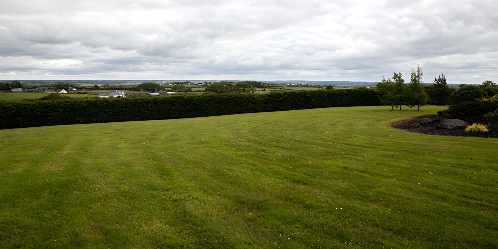

Where care feels like family.
A family-run nursing home in the village of Abbeyknockmoy. We provide 24-hour nursing care, and we make room for the people who love our residents to stay part of the day.
- 61 registered beds
- Long-term, respite and dementia care
- Registered with HIQA, centre 341
A small home, run by a family, in a village that knows us.
Flannery's is a family-run nursing home, purpose built to the highest standards, providing 24-hour person-centred nursing care. Every resident becomes part of the family, and that is how we want it to feel.
The resident is at the centre of everything we do. Care is individualised and planned in consultation with the resident and their family, and reviewed as needs change. Our aim is to make sure residents enjoy the best quality of life, and that their families have peace of mind.

What we can help with
Care is planned person by person, with the resident and their family, and reviewed as needs change.
- 01
Residential care
A full-time home from home for the majority of our residents, who along with their families have direct input into their care, activities and surroundings.
- 02
Respite care
Supporting you by supporting your caregiver: temporary care that lets a family carer take a break and recharge.
- 03
Convalescence
Recovery after surgery or serious illness, with physiotherapy input, as a stepping stone back to home life.
- 04
Palliative care
Maintaining quality of life by preventing and managing pain, working with the specialist palliative services in Galway.
- 05
Dementia care
Care planned around the person, including the Sonas programme, Ireland's leading therapeutic activity for people living with dementia.
- 06
Not sure what you need?
Ring us and describe the situation. If we cannot help, we will tell you who can.



Your own room, with your own things in it.
Every bedroom has full en-suite facilities, a remote-control television, a nurse call system and a direct-dial telephone as standard. Rooms are spacious and bright, and look out over the landscaped gardens and the surrounding countryside.
Residents bring photographs, cushions and throws from home, so the room becomes theirs. The building is on one level, with wide corridors for walking in bad weather, and it is wheelchair accessible throughout.
Something on, and nothing forced.
Our Activities Coordinator plans the week and organises outings and events: reminiscence with pictures of life in the days of old, music, bingo, flower arranging, pet therapy, arts and crafts, light exercise, and the weekly residents' baking.
Our chefs cook fresh each day, with an extensive menu displayed daily and special or medically advised diets catered for. Meals can be taken in either dining room, including the assisted dining room where staff help at the table, or in your own room. A physiotherapist visits weekly, and Roman Catholic Mass is celebrated weekly.

The house, as it is
All photographs →


Come and see the place for yourself.
The best way to judge a nursing home is to stand in it. Ring us and we will arrange a time that suits, and you can bring whoever you would bring.